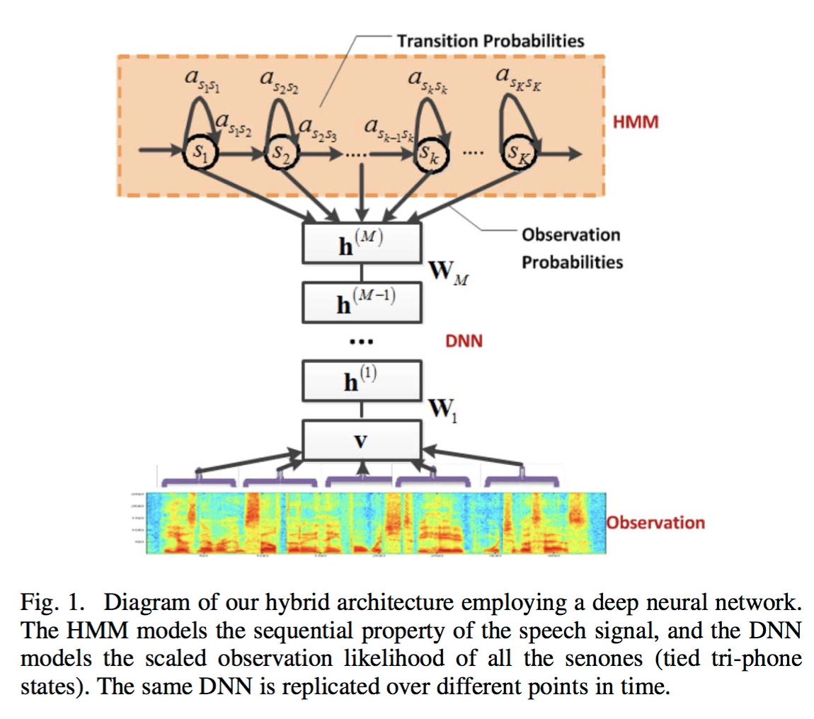
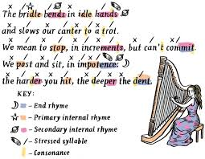
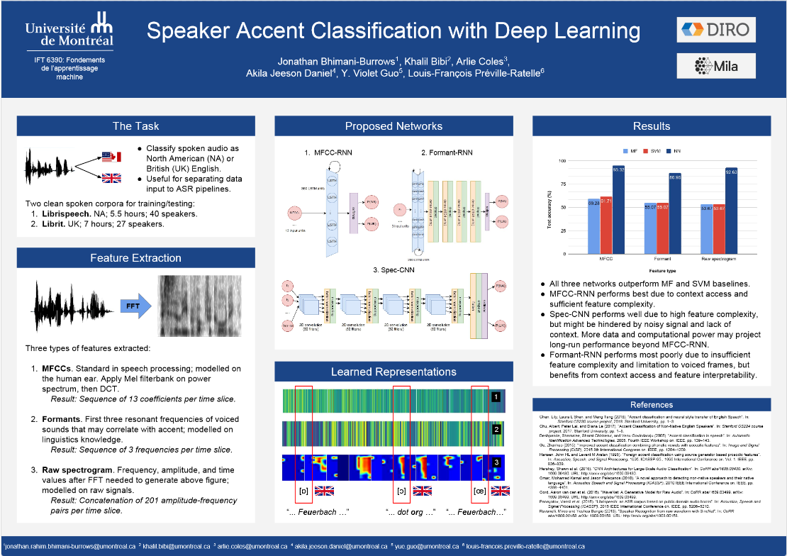

Alignement forcé via réseaux neuronales
Augmenter le Montreal Forced Aligner, un logiciel pour l'alignement phonétique forcé, afin d'utiliser des réseaux neuronaux de Kaldi, remplaçant l'architecture traditionnelle de HMM-GMM.
Apprentissage automatique & Traitement automatique du langage naturel
Cherchant des solutions en apprentissage automatique aux problèmes de langage naturel.
Je m'appelle Arlie Coles, et je suis étudiante de maitrîse professionnelle en apprentissage automatique chez MILA à l'Université de Montréal. J'y suis afin d'approfondir mes connaissances et apprendre plus sur la pointe du domaine, pour que je puisse amener des contributions créatives et pratiques à l'industrie croissante de l'apprentissage automatique.
Mon expérience forte en traitement automatique du langage naturel (NLP) et mon intêrét en reconnaissance automatique de parole (ASR) ont été cultivés à l'Université McGill, où j'ai étudié l'informatique et la linguistique et j'ai reçu mon B.A.&Sc. avec mention de première classe. J'ai développé des logiciels pour l'analyse de corpus pour le Montreal Computational & Quantitative Linguistics Labet des réseaux neuronales pour le Montreal Forced Aligner pour ma thèse de première cycle sous Morgan Sonderegger.

Augmenter le Montreal Forced Aligner, un logiciel pour l'alignement phonétique forcé, afin d'utiliser des réseaux neuronaux de Kaldi, remplaçant l'architecture traditionnelle de HMM-GMM.

Détection semi-supervisée des rimes et des schémas rimiques (dans le contexte de la poésie ou des paroles), y compris les rimes internes et imparfaites, utilisant des LSTM bidirectionnels.

Un système de classification pour la détection d'accent anglais ou nord-américain via des RNN et des CNN.